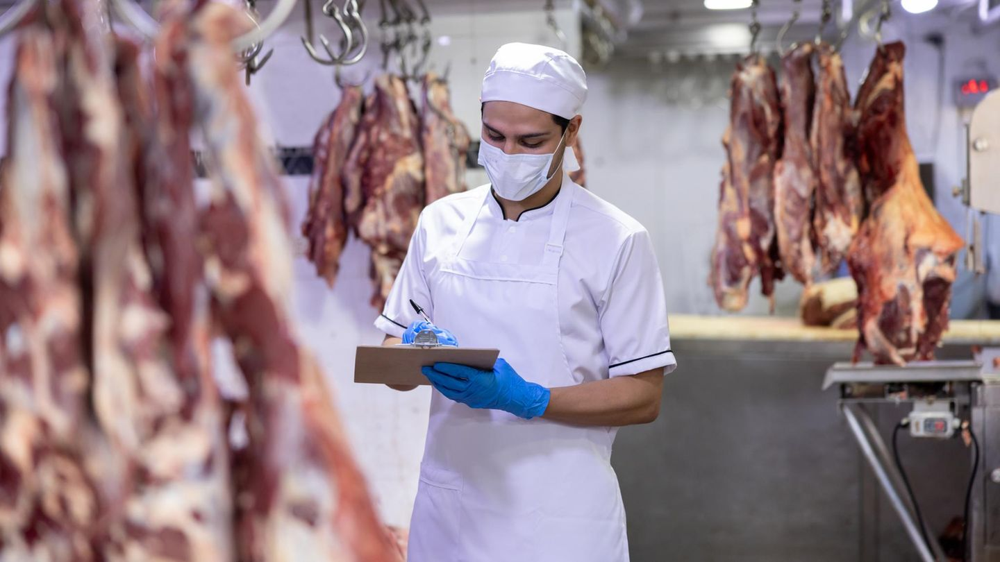

20 programas de autocontrole desenvolvidos segundo portaria 368/1997 MAPA para frigoríficos, laticínios e beneficiadoras.
Desenvolvemos e implantamos todos os programas de autocontrole exigidos pelo MAPA para registro SIF, SIE e SIM. Seu estabelecimento recebe documentação técnica, treinamento de equipe e acompanhamento até aprovação na vistoria.

Vistoria técnica para identificar adequações necessárias
Elaboração de todos os POPs e programas obrigatórios
Capacitação in loco para execução dos programas
Suporte contínuo até aprovação na vistoria MAPA
Diagnóstico inicial sem custo para frigoríficos e laticínios no Rio Grande do Sul.